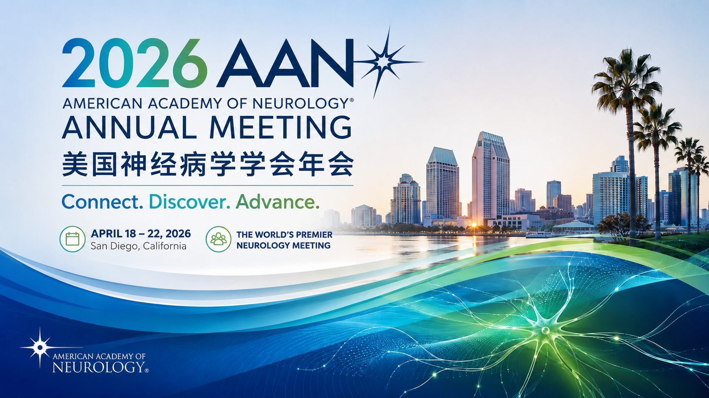

对重点大会中的 MG 相关研究进行主题化梳理和专家视角解读。
Conference Channel
频道导读
本页作为会议资讯入口，后续可持续承载 AAN、EAN、MGFA、AANEM、JSN 等会议相关内容；当前已上线 EAN 2026 与 AAN 2026 两篇“会议撷英”，并新增“相关国际会议”索引。
会议摘要多为阶段性资料，关键结论需等待全文、指南或监管文件进一步验证。
整理 MGFA、AAN、EAN、AANEM、WMS、MDA、ICCN、WCN、JSN 等会议官网入口和 MG 相关性。
查看会议列表Conference Highlights
会议撷英
精选重要学术会议中的重症肌无力研究进展，按照主题进行深度整理。
从 FcRn、补体、B 细胞靶向治疗到真实世界证据，梳理欧洲神经病学年会 MG 研究进展。
阅读全文
AAN 2026 2026 AAN重症肌无力研究全景报告从靶向生物制剂到细胞治疗，系统整理美国神经病学年会 MG 摘要、临床试验和转化趋势。
阅读全文会议摘要多为阶段性结果，关键结论需等待正式全文、指南或监管文件进一步验证。每张卡片进入独立详情页，便于后续继续扩展 AAN、EAN、MGFA、AANEM 等会议内容。
International Meetings
相关国际会议
汇总全球范围内可持续追踪重症肌无力、神经肌肉接头疾病、神经免疫与神经肌肉疾病研究进展的重点会议官网入口。
按 MG 专题会议、神经肌肉病大会、综合神经病学大会、临床神经电生理大会四类整理会议基本信息和官方链接。
查看会议列表会议日期、地点、征稿窗口和摘要系统会随年度变化。本站仅保存会议官网入口和情报追踪定位，具体日程请以各大会官网为准。
优先关注 FcRn、补体、B 细胞靶向治疗、CAR-T/细胞治疗、真实世界证据、患者报告结局和电生理诊断相关摘要。